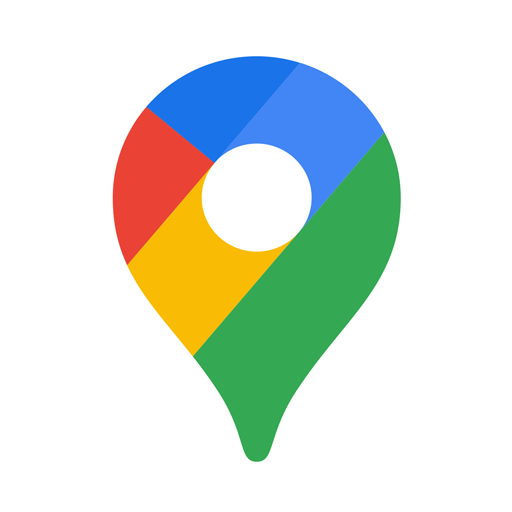
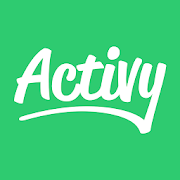

Aplikacje na rower znacznie usprawniają poruszanie się jednośladem i planowanie wycieczek. Pozwalają m.in. sprawdzić mapy rowerowe czy ustawić nawigację rowerową. Większość tradycyjnych aplikacji z GPS-em przeznaczonych jest przede wszystkim dla kierowców samochodów – mogą one nie wskazywać dróg, które dostępne są tylko dla rowerzystów i pieszych.
Poniżej zostało przedstawionych kilka propozycji aplikacji, które warto zainstalować.
Naviki
Obsługiwana zarówno na iOS oraz Androidzie. Jest to aplikacja nastawiona na tworzenie i optymalizacje tras rowerowych, działająca zarówno z połączeniem internetowym jak i bez niego. Programiści zadbali o dużą ilość paczek językowych, w których znalazła się i Polska. Jedynym minusem jest brak funkcji sportowych, takich jak obliczanie średniej prędkości na trasie czy obliczanie przejechanego dystansu i czasu na pokonanie go.
Pobierz aplikację: Google Play App Store
Google Maps
 Jedną z najbardziej popularnych możliwości jest wykorzystanie do tego celu Google Maps. To darmowa aplikacja na rower także z funkcją nawigacji. Co ciekawe, po podaniu startu i mety otrzymujemy trzy różne warianty trasy do wyboru, a na plus są również aktualne mapy. Niestety są również i minusy. Google Maps nie daje możliwości wyboru typu jednośladu. Oznacza to, że przy wyborze trybu rowerowego mogą z niej korzystać głównie posiadacze MTB. Aplikacja czasami prowadzi nas przez nieutwardzone drogi, którymi nie da się jechać na wąskich oponach. Dla szosowców lepszym rozwiązaniem jest opcja „samochód”, ale też trzeba uważać. Google Maps najlepiej sprawdza się w miastach, szczególnie jeśli nasz rower może jechać poza asfaltem. Ostatnia zaleta – aplikacja jest darmowa. Dla kogo jest ta nawigacja? Przede wszystkim dla szosowców (tryb samochodowy) lub rowerzystów terenowych (tryb rowerowy i pieszy).Pobierz aplikację: Google Play App Store
Activy
 Zamień swoje aktywności w grę! Activy pomoże Ci zbudować motywację do częstszej jazdy na rowerze i biegania. Zapisuj przejazdy i biegi z GPS, oszczędzaj CO2, wystartuj w wyzwaniach otwartych lub stwórz zabawę dla całej firmy!- To nie jest aplikacja sportowa, ale motywująca gra dla każdego kto jeździ rowerem i biega.
- Activy wynagradza za Twoje zaangażowanie, a nie tylko liczbę kilometrów.
- Jeździsz lub biegasz aktywnie do pracy? Oszczędzaj CO2 wraz z innymi.
- Dołącz do wyzwań dla pracodawców, biurowców, uczelni czy grupy znajomych.
- Możesz połączyć Activy z Twoimi kontami w Strava lub Garmin Connect
- Activy uzupełni Twoje sportowe aplikację o zabawę zespołową ii rankingi oparte nie tylko o liczbę kilometrów
- zapiszesz swoje aktywności lub połączysz grę z inną aplikacją sportową
- rywalizujesz i współpracujesz w rankingach indywidualnych, zespołowych, grupowych
- zdobędziesz punkty, poziomy, odznaki, często wymieniane na nagrody lub wspieranie celu charytatywnego
- porównasz swoje statystyki z innymi graczami, ale bez podglądu mapek
Pobierz aplikację: Google Play App Store
Strava
 Strava to mobilna aplikacja stworzona z myślą o biegaczach jak i ludziach uprawiających kolarstwo – zarówno w sensie hobbystycznym jak i zawodowym. Dzięki niej możliwe jest stałe monitorowanie swoich postępów, a w niektórych przypadkach porównanie ich z osobami trzecimi. Strava monitoruje, a do tego rejestruje cały przebieg poszczególnych treningów. Tak jak inne aplikacje, które stworzone zostały z myślą o sportowcach, można ich używać w systemie webowym jak i mobilnym. W pierwszej wersji, już po skończonym treningu (lub niewinnej aktywności fizycznej) da się go poddać go analizie i sprawdzić wszystkie związane z nim wiadomości. Nie ważne czy jest się już w domu, czy dopiero co się go ukończyło. Wersja mobilna ma sens jeśli podczas uprawiania sportu, sportowiec ma ze sobą smartfon z włączoną aplikacją i systemem GPS. To właśnie on – GPS, śledzi miejsce przebywania danej osoby i sprawdza łączny przebyty dystans wraz z tempem w jakim się go przebyło.
Sam przebyty dystans pokazuje się w oddzielnych segmentach podzielonych na odcinki. Da się je utworzyć własnoręcznie lub skorzystać z tych, które już zostały stworzone przez pozostałych użytkowników programu Strava. Ponadto dzięki tej funkcji można również rywalizować z innymi ludźmi, bez względu na to czy to znajomy czy osoby kompletnie nam nieznane, na danych odcinkach poruszania się. Aplikacje oferuje także informacje o najwyższych/najniższych punktach czy na stopniu nachylenia na konkretnej trasie.
Strava jest podobna do Endomondto i także daje możliwości ukazania swych wyników na swoim koncie na Facebooku. Można również obserwować innych ludzi, w tym zawodowych kolarzy (warunkiem jest korzystanie przez nich z programu), czy stworzenie grup, a nawet zweryfikowanie czy ktoś, również używający Stravy, minął się z osobami na trasie.
Strava to mobilna aplikacja stworzona z myślą o biegaczach jak i ludziach uprawiających kolarstwo – zarówno w sensie hobbystycznym jak i zawodowym. Dzięki niej możliwe jest stałe monitorowanie swoich postępów, a w niektórych przypadkach porównanie ich z osobami trzecimi. Strava monitoruje, a do tego rejestruje cały przebieg poszczególnych treningów. Tak jak inne aplikacje, które stworzone zostały z myślą o sportowcach, można ich używać w systemie webowym jak i mobilnym. W pierwszej wersji, już po skończonym treningu (lub niewinnej aktywności fizycznej) da się go poddać go analizie i sprawdzić wszystkie związane z nim wiadomości. Nie ważne czy jest się już w domu, czy dopiero co się go ukończyło. Wersja mobilna ma sens jeśli podczas uprawiania sportu, sportowiec ma ze sobą smartfon z włączoną aplikacją i systemem GPS. To właśnie on – GPS, śledzi miejsce przebywania danej osoby i sprawdza łączny przebyty dystans wraz z tempem w jakim się go przebyło.
Sam przebyty dystans pokazuje się w oddzielnych segmentach podzielonych na odcinki. Da się je utworzyć własnoręcznie lub skorzystać z tych, które już zostały stworzone przez pozostałych użytkowników programu Strava. Ponadto dzięki tej funkcji można również rywalizować z innymi ludźmi, bez względu na to czy to znajomy czy osoby kompletnie nam nieznane, na danych odcinkach poruszania się. Aplikacje oferuje także informacje o najwyższych/najniższych punktach czy na stopniu nachylenia na konkretnej trasie.
Strava jest podobna do Endomondto i także daje możliwości ukazania swych wyników na swoim koncie na Facebooku. Można również obserwować innych ludzi, w tym zawodowych kolarzy (warunkiem jest korzystanie przez nich z programu), czy stworzenie grup, a nawet zweryfikowanie czy ktoś, również używający Stravy, minął się z osobami na trasie.
Pobierz aplikację: Google Play App Store